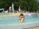
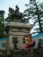
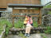
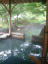

2001年9月23日 13時26分撮影
芝生でボール遊びをしました。
キャハキャハとボールの取り合いです。楽しかったねぇー。。。
2001年9月23日 12時28分撮影
「平成榛原子供のもり公園・ゆうゆう」にやって来ました。
お天気が良いので、パンツ１枚になって水浴びでっす！
2001年9月16日 14時36分撮影
仙台市内・青葉城址にて。
仙台の藩祖 伊達政宗像の前で記念撮影。
2001年9月16日 10時5分撮影
１泊２日で５回も温泉に入りました。またいつか訪れたいね。
2001年9月16日 8時5分撮影
がが温泉の混浴露天風呂。
午後４時～６時までが女性専用になるので、大助かり！
モミジの木があちこちにあるので、秋は紅葉が綺麗だろうなぁ。。。2001年9月15日 12時14分撮影
あちこちに石が積み上げられているのを見て、ジットしていられない
「由起ちゃん石、パパ石、ママ石、じぃちゃん石、ばぁちゃん石・・・」2001年9月15日 12時3分撮影
お天気が良くてホッとしていたのも束の間、、、
山の上のお天気はホント変わりやすい、、、たちまち霧が・・・。2001年9月15日 11時48分撮影
やってきました「蔵王・お釜」 心配していたお天気も、今は大丈夫。2001年8月18日 10時50分撮影
大聖堂の尖塔へ登りました。石の彫刻が見事です。
町の眺めも凄いけど、高くてとっても怖いのだ。2001年8月17日 18時35分撮影
シャルトル大聖堂をバックに。片方の塔しか見えていないけど
世界遺産に指定されてるだけあって、とっても素晴らしいんですよ。